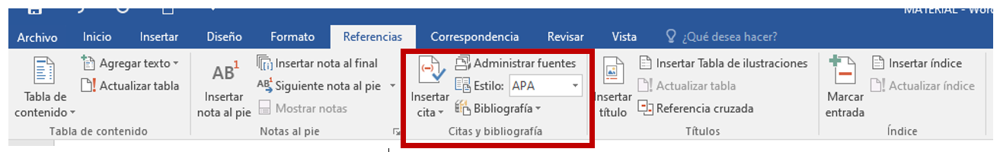
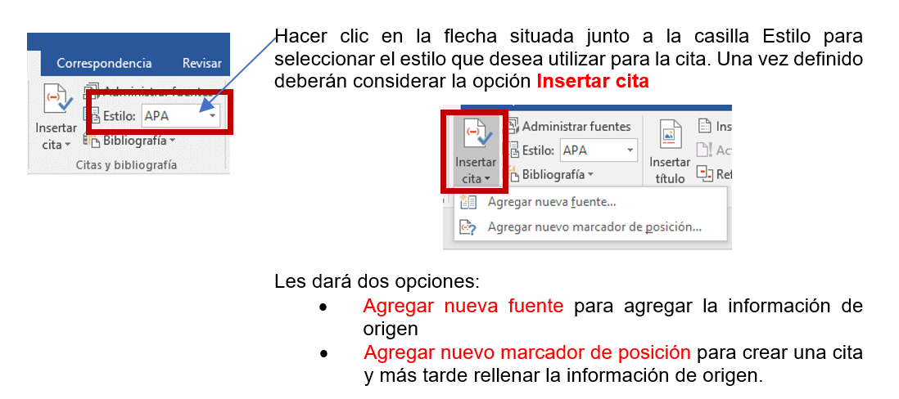
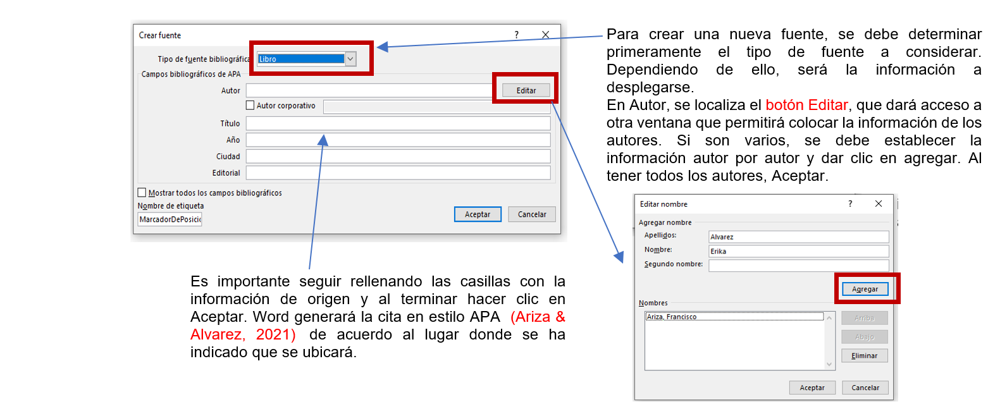
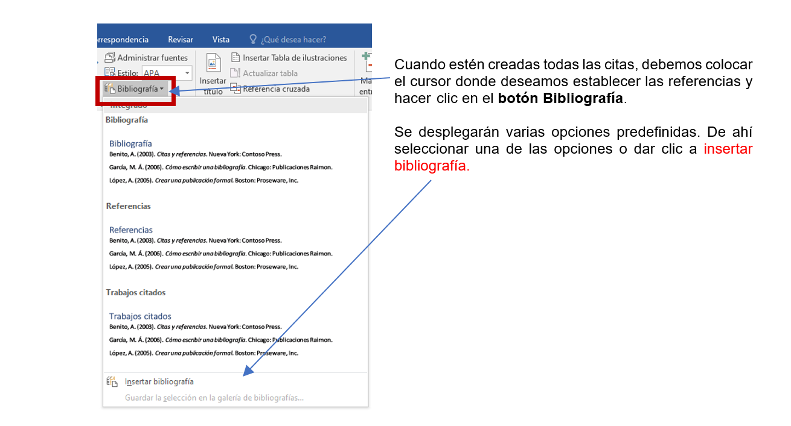

CREAR CITAS Y BIBLIOGRAFÍA EN WORD

Para agregar una cita se debe hacer clic al final del fragmento de texto que desea citar, ir a la pestaña de Referencias, en el grupo Citas y bibliografía.


Tras la realización de todas las citas que llevará el documento, debemos generar la bibliografía con todas las referencias bibliográficas que se hayan incorporado.
